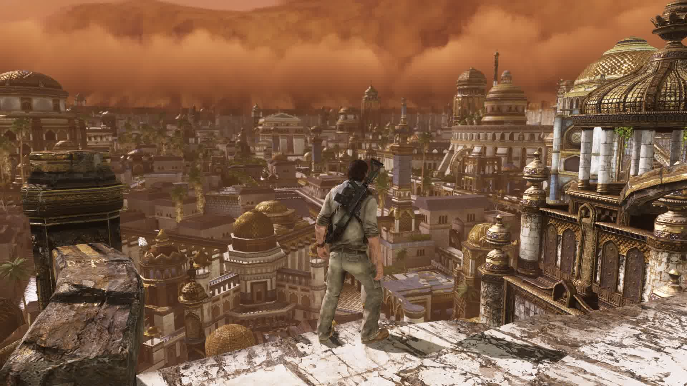

2021年游戏总结 下
本文承接上文，继续聊聊 2021 年我所体验的一些游戏。
伊苏8：丹娜的陨涕日
今年玩过最喜欢的 jrpg 作品，几乎满足了我对于一款优秀 jrpg 的全部幻想。
战斗方面爽快而又不失深度。伊苏系列向来以高速的即时制战斗著称，本作也不例外，角色与敌人的动作都相对较快，技能无冷却加之技能槽的回复速度很快，因此本作的战斗与大部分 jrpg 讲究策略的慢节奏战斗有很大不同。但这并不意味着本作战斗就十分无脑，弹反、极限闪避、弱点属性等机制的加入很好的提升了战斗系统的深度。
本作的剧情也很优秀。剧情悬念设置十分得当，给予玩家很强的故事驱动力，人物塑造极佳，进一步增强代入感。
本作最值得夸赞的还是地图探索方面的体验。本作采用的是一个非常典型的“银河恶魔城”式的地图设计，玩家需要探索地图的各个角落，从而解锁新的能力，再次进行更深一步的探索。同时本作探索不光局限于对于物品的获取，还包括了 npc 的发现，这一切与 jrpg 的强故事驱动相结合，使得探索欲望进一步上升。
最后讲讲我对于本作不满的地方。首先是本作的保卫战部分，这部分实属多余，不仅不有趣，还很大程度破坏了地图探索的连贯性与叙事节奏，纯粹只是一个获取资源的方式罢了。其次就是画面表现了，我其实并不是一个重视游戏画面表现的玩家，但无奈本作或者说 falcom 社的画面表现实在是惨不忍睹，人物建模、场景基本就是 ps2 时代水平了。但如果对此毫不在意，那《伊苏8》绝对是一款非常优秀的 jrpg 游戏。
晶体管
制作十分精良的独立游戏，完成度很高。
优秀的美术和音乐自不必多说。本作最让人眼前一亮的还是那一套基于函数搭配和指令战略的一套战斗系统，这套系统本身就具有就具有很高的可玩性，同时各函数的效果还可以叠加成为新的函数，使得战斗的策略性十分丰富。
本作的开发商正是开发了近年获奖无数的《哈迪斯》的 Supergiant 工作室。这非常喜欢这家工作室，不仅因为他们惊艳的美术设计，以及他们对于游戏的精雕细琢，更在于他们敢于跳出自己的舒适圈，不断尝试新的游戏类型。他们团队这十余年开发的四部作品，每一部的类型都不尽相同：从传统的 ARPG 《堡垒》，到融入了策略要素的 《晶体管》，再到融入了体育竞技要素的《柴薪》，而《哈迪斯》又是款 Roguelike 游戏，这种不拘泥于现有成功的精神真的值得所有的游戏开发者学习，《哈迪斯》如今能取得如此大的成功也可谓是众望所归。
尼尔：自动人形 & 人工生命
《尼尔：自动人形》对我而言是一款特别的作品，它是我最早接触的主机游戏，也是真正让我爱上主机游戏的作品。
事实上，我第一次游玩本作时由于种种原因并没有通关。但在去年《人工生命》的高清复刻版发售前，我又将本作重新拾起并最终通关。平心而论，《尼尔：自动人形》是一个优点和缺点都十分明显的作品。优点显而易见，MONACA 的音乐、横尾太郎的剧本以及白金的动作系统，使得本作有一个非常好的底子。但缺点也非常明显，粗糙的场景建模、遍布整个地图的空气墙，以及重复跑图的任务。战斗系统虽然非常爽快，但战斗体验却并不好，后期堆怪现象比较严重。但《尼尔：自动人形》仍然属于佳作的范畴，值得推荐给所有玩家。
反观《尼尔：人工生命》的表现就不尽如人意了，作为系列的第一部作品，续作中的缺点基本继承自前作，同样的空气墙和重复跑图。此外，一代由于时代限制，场景的规模很小，地图虽然看似广袤，但实际上真正可以到达的区域很少，相比续作的开放式地图要差很多。并且由于失去了与白金合作的动作系统，即便是在高清复刻版中对原作的系统加以改进，本作的战斗仍然比较无聊。因此，本作只推荐给想要补全系列剧情的玩家。
神秘海域3 & 失落的遗产
《神秘海域》系列补完计划的最后两作。
在前年通关《神秘海域4》之后，我被其成熟的电影化运镜与出色的动作系统所折服，就想要补完系列的正传作品，在通关了《失落的遗产》之后，这个计划总算基本完成（初代未通关，动作系统和画面表现难以接受），因此想聊聊我对于这个系列的看法。
和相似类型的《古墓丽影》重启三部曲相比较，神海系列显得更加纯粹，它不会出现《古墓丽影》中的支线任务、武器强化、能力加点等繁杂事项，所有的一切均为故事服务，游戏中基本没有任何的 ui 界面，主线任务的推进也主要靠着视觉上的引导。如果把新古墓三部曲比作电影化的游戏，那神海系列更像是游戏化的电影。

这个系列每一作都带给玩家一场跌宕起伏的冒险旅程，2代的香巴拉，3代的千柱之城，4代埃弗瑞的宝藏，失落遗产的印度，无一不给玩家留下深刻的印象。但这类型的游戏受技术力的影响很大，PS3 时期的三部曲虽然当时广受赞誉，《神秘海域2》更是获得了当年的 TGA 年度游戏，但以现在的眼光来看，较为落后的画面和动作，加上如今大量游戏都纷纷采用了电影化的叙事方式，现在游玩已经很难体验到当年玩家所体验到的震撼了。这也是这一类型游戏的缺陷，《失落的遗产》中出现的一些与前作类似的情节确实是让人有些审美疲劳了，顽皮狗显然也是意识到了这一点，正式完结了这个系列，在我看来是非常明智的决定。
最后生还者1 & 2
电影化动作冒险游戏的最高峰，真正意义上的杰作。
如果说《神秘海域》系列带给玩家的情感体验只来源于感官上的刺激，那么《最后生还者》系列带给玩家的则是心灵上的震撼。不同于神海系列较为轻松的夺宝旅程，《最后生还者》讲述的则是末世下人与人的关系。与大多数类似末世题材作品致力于展现世界观不同，本系列更多关注的是 The Last of Us 中的 us，讲好一个相对小格局的故事，充分调动玩家的情感才是本系列的目的。因此本系列虽然是一个第三人称视角的游戏，但其实游戏内的视角仅仅局限在主角，玩家无法得知主角之外所发生的故事，从而让角色与玩家产生共鸣，从而带来极致的情感体验。初代也因此广受赞誉，被无数玩家奉为神作。
但二代在充分继承一代框架的基础上，却带来了完全不同的效果，玩家间的评价两极分化，甚至引发了游戏圈中大规模的争论。造成这一切的原因同样是本系列的特点——强烈的情感冲击。一代由于是新 ip，故事上也没有很大的包袱，结局虽然存在争议，但并没有掀起风波。而二代的剧情实在过于极端，同时在对玩家情感上的冲击要远胜于一代，加之剧本上存在的逻辑漏洞与叙事混乱，最终使得游戏带给玩家的情绪被愤怒所填充，造成了两级分化。可以说，这样情况的出现可以说并不意外，强烈的情感体验正是系列所追求的，因此二代的故事带给玩家的如果不是像一代那样的正面反馈，那就是及其负面的反馈，而绝不可能是平淡。
即便我同样对二代的剧本不满意，但综合系列游戏极高的制作水准（尤其是二代）与带给玩家的情感冲击，这系列都值得推荐给所有的玩家。
零：濡鸦之巫女
美型的日式恐怖游戏，故事、氛围和恐怖感的营造都深得我心。
这个系列的核心机制——射影机系统可谓是恐怖游戏类型中一个非常经典且优秀的设计了，既很好的服务于恐怖感，又兼具很强的娱乐性。给怨灵拍照这一机制迫使玩家必须直面恐惧，带来了第一人称视角下的压迫感。同时这一机制需要玩家通过旋转相机达到伤害的最大化，这一过程本身也很有趣。另外操作方面最好使用带体感功能的手柄，不仅操作比较方便，还能很大程度上提升代入感。
本作的美型人设本来应该是加分项，但是也很大程度上降低游戏的恐怖感，到了《濡鸦之巫女》这一作可以说恐怖感非常低了，推荐因为恐怖而不敢尝试本作的玩家游玩。但原作毕竟还是老游戏的移植，视角转换方面感觉没有做很多优化，操作还是比较难受，需要时间适应。
通关本作后，我是真的喜欢上了这个系列，喜欢系列独特的氛围以及凄美的故事。这次移植大概也是在为续作的开发试水，毕竟这个系列虽然在恐怖游戏圈内名声不小，但实际销量却非常惨淡，希望今后能够等到到续作的到来。
绯红结系
一部有亮点但整体体验并不好的作品。
本作的战斗系统可以说非常出色，兼顾了演出效果与操作感。战斗系统本身并不复杂易上手，动作招式的整体反馈非常优秀，特效与动画间的配合十分完美，尤其 xbox 版本居然还适配了扳机震动，使得打击反馈进一步提升。本作在战斗方面的体验绝对称得上优秀。
但基本上本作能为之称道的也仅限于此了，其他方面表现得实在不尽如人意。首先是叙事，在我看来 PPT 式过场动画并不是本作叙事上的缺点，本作叙事结构本身非常混乱，剧情推动和人物动机不明不白。羁绊章节的加入也是把双刃剑，一方面确实丰满了人物性格，弥补了主线故事中人物塑造上的不足；但同时这部分内容与主线故事的割裂非常严重，以至于出现前一秒还在相互厮杀，后一秒就一起谈笑风生的情节。

此外，本作本质上还是一个数值驱动的 arpg 而并非传统的 act 类型，因此装备构筑部分也值得关注。但本作这方面做得并不好，人物的 build 部分还是过于简单，没有什么可供挖掘的深度。
感觉本作还是一个偏实验性质的作品，有亮点，但是大部分内容都显然没有经过打磨。
刺客信条：起源
个人第一部通关的《刺客信条》。
本作前期的体验可以说非常好，场景设计非常宏伟壮观，很好的还原了古埃及建筑的风貌。古墓探索设计还算不错，虽然古墓中谜题并不有趣，但探索本身就已充满乐趣。开放世界非常宽广，各地风格迥异，让人很有开图的欲望。
但以上所述的这些优点更多来自于画面效果和题材本身所带来的体验，越玩到后期，游戏的很多问题就逐渐显露出来。首先是叙事，剧情本身就不具备很强的吸引力，加上叙事的表现力太弱，使得剧情所带来的驱动力不足。
其次战斗系统缺乏深度和乐趣，不足以承载起后期大量的重复战斗。对比同样是开放世界“清据点式”任务的《对马岛之魂》，后者虽然战斗同样缺乏深度，但其战斗本身更加有趣，并且合理控制了战斗的密度，使得战斗的体验要远胜于本作。
最后，也是我最难以忍受的一点，就是等级压制过于严重。如果只做主线任务，玩家无法达到继续推进主线任务的推荐等级，而且等级之间的数值差距非常悬殊，通常越个两三级就很容易被秒杀。但支线任务往往并不有趣，这使得后期的游戏体验直线下降，只想快速通关。
 微信
微信 支付宝
支付宝